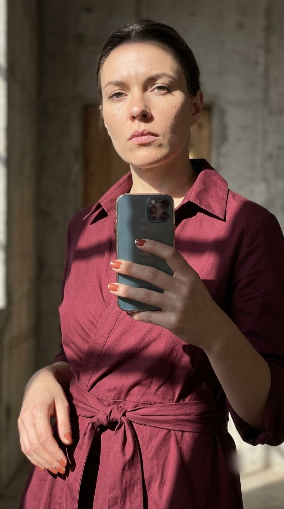
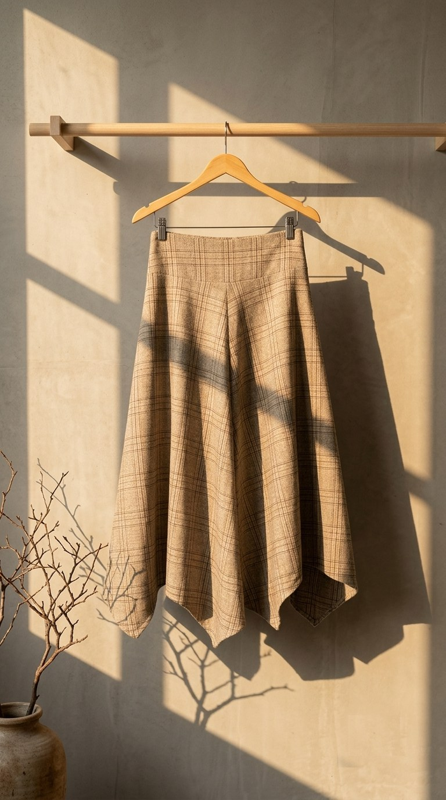
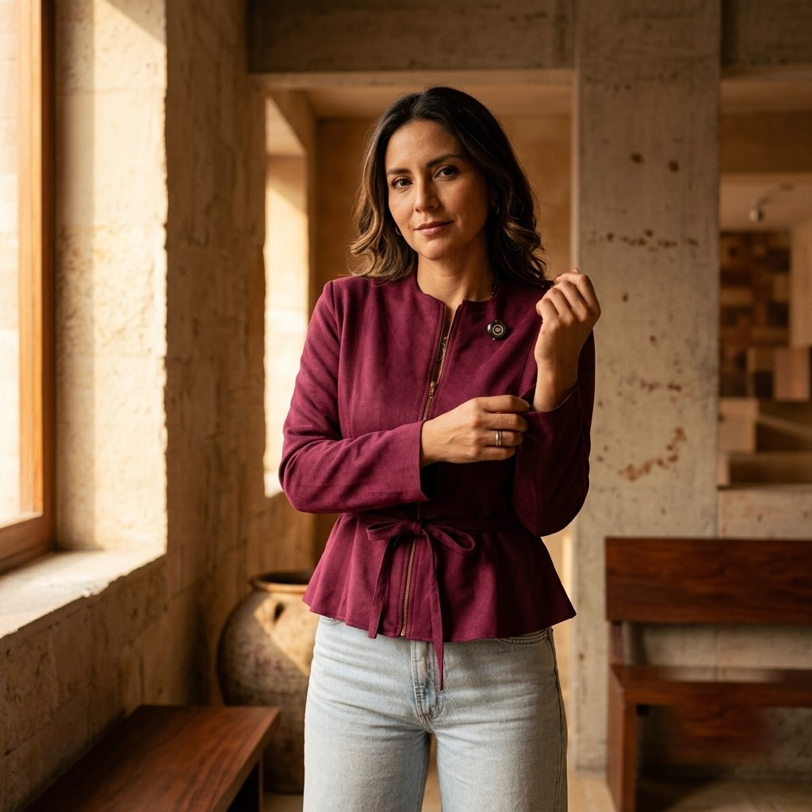
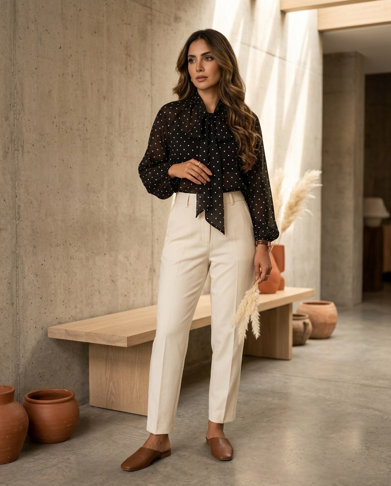
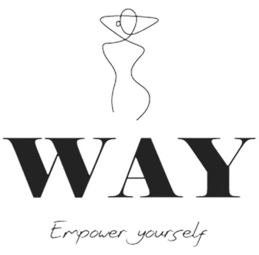

"WAY cambia de cara, no de esencia"
Documento operativo de un solo uso — el plan para revelar el cambio a Territorio 01 — La Firma frente a una comunidad ya establecida. Para identidad de marca ver el brandbook oficial; para la cadencia de contenido regular, ver la guía de Instagram.
Cuatro Fases, Una Secuencia
El lanzamiento no es un solo post — es una secuencia coordinada. Antes de fijar el Día D hace falta cerrar 2 pendientes mínimos (wordmark vectorial final, fecha comunicada al equipo — ver Fase 1).
La Fase 4 corre en paralelo a las Fases 2 y 3 — no es un paso posterior, es lo que pasa detrás de bastidores con empaque, feed antiguo y material físico mientras las otras fases son públicas.
Teaser Silencioso
Objetivo: sembrar que "algo cambia" sin quemar el reveal ni confundir a una audiencia 28–65+ que no vive pegada al feed. Duración corta a propósito — 1 semana, campaña de intriga seria, no una espera larga. Un teaser más largo con esta audiencia genera más confusión que expectativa.
- PDF vectorial del wordmark (equivalente a AI/EPS, ver brandbook §05) entregado al proveedor de impresión para hang tag y señalética — Responsable: Juan
- Fecha de Día D fijada y comunicada al equipo — Responsable: Lizzie
Checklist — detrás de bastidores
Perfil de WhatsApp Business preparado en staging (foto, nombre, catálogo)
Responsable: NayelliHeader y favicon nuevos cargados en Shopify (sin publicar / detrás de contraseña)
Responsable: JuanAvatar, hang tags y bolsas ya producidos y en bodega [Recomendado — no bloqueante]
Responsable: NayelliCalendario de Stories — semana de teaser (día por día)
Solo 3 Stories en toda la semana — no feed, no TikTok. Las 3 fotos de abajo son referencia de encuadre y luz, no la foto final: Lizzie replica la composición con su celular, un momento antes de publicar cada Story.
Mismo criterio que ya se usó para el teaser del Día 2: las referencias de esta semana se enfocan en prenda y marca, nunca en empaque o señalética.
Día D — Secuencia de Activación
Regla de oro: el avatar y la identidad visual cambian en todos los canales dentro de la misma hora. El contenido "explicativo" puede escalonarse después — la identidad visual, no. Es lo que evita que se vea desincronizado.
Qué hace cada canal
Canal líder. Publica primero: el Reel narrativo del cambio, luego Stories de refuerzo.
Responsable: NayelliBroadcast a la lista de contactos ya convertida — mensaje directo y personal, no narrativo.
Responsable: Juan (programado vía WAY Inbox)Refleja la identidad nueva desde la hora 0. Es la prueba de consistencia para quien llega desde el link en bio.
Responsable: JuanSeñalética actualizada desde la apertura del mismo día — ni antes (evita spoilers) ni después (evita desfase).
Responsable: NayelliEspeja el Reel al día siguiente, con corte y gancho propios — canal secundario, no compite por atención el mismo día.
Responsable: NayelliPreparación de contenido — 2–3 días antes del Día D
Elegir 1 de las 3 opciones de Reel (ver abajo) según la disponibilidad de Lizzie
Responsable: Nayelli + LizzieGrabar el Reel — de preferencia con luz de tarde, junto a una ventana
Responsable: LizzieEditar el Reel con subtítulos (CapCut, InShot o el editor nativo de Instagram)
Responsable: NayelliPreparar los 4 slides de Stories con la foto de referencia + velo de color (ver dirección visual abajo)
Responsable: NayelliChecklist — secuencia hora por hora
Hora 0 — Cambiar avatar y bio en Instagram, WhatsApp Business y TikTok, dentro de la misma hora
Responsable: NayelliHora 0 — Cambiar avatar y datos en Shopify, dentro de la misma hora que el resto de los canales
Responsable: JuanHora 0 — Publicar en Instagram el Reel de anuncio ("Así nace la nueva WAY")
Responsable: NayelliHora 0 + 30 min — Publicar el carrusel de Stories de refuerzo (4 slides, texto abajo) + sticker de encuesta
Responsable: NayelliHora 0 + 2–4 h — Enviar broadcast de WhatsApp Business a la lista de contactos
Responsable: Juan — programado en WAY Inbox (CRM propio)Mismo día — Confirmar que Shopify ya refleja la identidad nueva
Responsable: JuanMismo día — Confirmar que la vitrina de Galería Damero ya refleja la identidad nueva
Responsable: LizzieDía D + 1 — Publicar en TikTok la versión adaptada del Reel (recorte y gancho propios)
Responsable: NayelliFormato 9:16 vertical · Subtítulos siempre (la mayoría ve sin sonido) · Gancho fuerte en los primeros 3 segundos · Duración 15–30 segundos. (Mismas specs ya definidas en la guía de Instagram, sección 03 — no se reinventan aquí.)
Las fotos actuales de catálogo se toman siempre en el mismo rincón (muro de ladrillo + banca de concreto, luz de tarde entrando de costado). No hace falta un local nuevo ni una locación "de revista": el brandbook prohíbe el ladrillo como único recurso, no prohíbe usarlo — se resuelve grabando más cerca, recortando el ladrillo del encuadre y aprovechando la parte de concreto liso y la luz de tarde que ya tienen, en vez de mostrar el muro completo como fondo.
Piezas listas para publicar
El paquete completo del Día D: el Reel (3 opciones a elegir), el post/caption, el carrusel de Stories y el broadcast de WhatsApp. Todo en un solo lugar — nada que buscar en otra sección.
Reel de anuncio — 3 opciones creativas (elige 1)
Las 3 asumen que Lizzie sale en cámara — es quien normalmente aparece en las fotos/videos de la marca. Cada una tiene su propio shot list, listo para grabar sin necesidad de guionista ni editor.
En vez de fijar una prenda exacta con semanas de anticipación, se describe por silueta y familia de color — crema-marrón-borgoña, sección 09 del brandbook. Cualquier pieza vigente en catálogo que calce con esto sirve:
- Vestido o blusa camisero — cuello y cierre de botones, cinturón de tela si la pieza lo trae, familia burgundy/marrón. Para Opción 1: plano frontal, cuello y cierre visibles.
- Prenda en tela fluida (seda o similar), tono terracota u oversize. Para Opción 2: close-up de manos ajustando botón o cierre.
- Falda o pieza con textura/estampado geométrico (cuadros, plisado, tweed), tonos marfil/marrón. Para Opción 3: colgada en percha, toma de apertura.
Evitar: prendas en tonos verde oliva, azul o print floral azul (existen en catálogo pero rompen el color grading crema-marrón-borgoña que pide el brandbook).
WAY no repone stock (lotes pequeños, sin reposición) — cualquier pieza específica elegida hoy puede agotarse antes de grabar. Confirmar la pieza real disponible cerca de la fecha del Día D, no con semanas de anticipación.
Lizzie habla directo a cámara, estilo selfie. La opción de menor producción y mayor cercanía — encaja perfecto con el tono "amiga que da consejos" de la marca. Se graba en un solo take, sin cortes complejos.

assets/photos/lanzamiento-reel-opcion1.jpgMirada seria y segura, no sonrisa grande de selfie casual — un vestido o blusa camisero con cuello marcado (y cinturón, si la pieza lo trae) evita que se vea como una prenda básica.
| Tiempo | Toma | Texto en pantalla |
|---|---|---|
| 0–3s | Lizzie de frente, celular a la altura de los ojos, luz de ventana de costado. Gancho inmediato. | "Tengo que contarte algo…" |
| 3–12s | Lizzie sigue hablando, cuenta en sus palabras por qué WAY cambia de imagen (usar como guía la historia de origen ya escrita en el brandbook). | "WAY cambia de cara, no de esencia" |
| 12–20s | Lizzie muestra la prenda elegida (vestido o blusa camisero, familia burgundy — ver dirección de vestuario arriba) en cámara — pieza real, ya en catálogo. | "Misma calidad, mismo cariño de siempre" |
| 20–25s | Cierre mirando a cámara, sonriendo. | "Bienvenidas a esta nueva etapa ✨" |
Más editorial: Lizzie ajustándose una prenda nueva, cortes rápidos, texto en pantalla en vez de hablar. Requiere un poco más de edición (varios clips cortos) pero se ve más "producido" sin necesitar actuación.
assets/photos/lanzamiento-reel-opcion2.jpgToma de apertura (0–3s): close-up de manos ajustando un botón o cierre — misma luz cálida direccional que el resto del set.
| Tiempo | Toma | Texto en pantalla |
|---|---|---|
| 0–3s | Close-up de manos ajustando un botón o cierre de la prenda. | "Algo nuevo está pasando en WAY" |
| 3–10s | Lizzie girando o caminando, plano medio, luz cálida direccional. | "WAY cambia de cara ✨" |
| 10–18s | Lizzie mirando a cámara con gesto de seguridad (ver referencia). | "La misma esencia de siempre" |
| 18–25s | Plano final, sonrisa, marca WAY en pantalla al cierre. | "Bienvenidas ✨" |
assets/photos/lanzamiento-reveal.jpg como referencia — ver más abajo.La opción más fácil de filmar sin actuación: arranca con la prenda ya en reposo en un rincón estilizado de la tienda — nadie en cuadro, cero necesidad de encontrar el momento perfecto — y Lizzie entra recién a los 4 segundos.

assets/photos/lanzamiento-reel-opcion3.jpgUna falda o pieza con textura/estampado geométrico (ver dirección de vestuario arriba) en percha de madera, rincón de concreto pulido — toma de apertura, sin nadie en cuadro todavía.
| Tiempo | Toma | Texto en pantalla |
|---|---|---|
| 0–4s | La prenda ya colgada en el rincón estilizado (ver referencia arriba), luz de ventana entrando en diagonal — nadie en cuadro todavía. | "Un día normal en WAY… o casi 👀" |
| 4–12s | Lizzie entra en cuadro y descuelga la prenda de la percha, candid, sin mirar a cámara. | "Estamos cambiando de imagen" |
| 12–20s | Lizzie levanta la vista y habla brevemente a cámara. | "Y quería que lo supieran primero ustedes 💛" |
| 20–25s | Cierre con Lizzie mostrando la prenda puesta sobre el hombro, sonriendo. | "Bienvenidas a esta nueva etapa ✨" |
Post de Instagram + Broadcast de WhatsApp

assets/photos/lanzamiento-reveal.jpgEsta foto es guía de encuadre y luz — la portada final es un fotograma real del Reel de Lizzie, o una foto que ella replique con esta composición.
Caption genérica de arriba — funciona sin importar cuál de las 3 opciones se grabe. Abajo, una variante por opción si se prefiere algo más pegado al tono de cada una.
Caption por opción de Reel
Usar solo si se prefiere una caption más pegada al tono de la opción grabada, en vez de la genérica de arriba.
Stories de refuerzo — 4 slides, dirección visual + texto final
Una sola foto de referencia (lanzamiento-stories-refuerzo.jpg), reusada en los 4 slides con un velo de color de marca encima — evita generar y revisar 4 imágenes distintas. Se arma en el editor de Stories de Instagram: subir la foto, oscurecerla con los controles nativos de la app o superponer un rectángulo de color de marca (baja opacidad), y el texto centrado encima en Bodoni Moda si la app lo permite, o la fuente por defecto si no.
Cada slide suma la foto de referencia con velo de color de marca, el monograma (misma marca de agua que el resto del sistema), un resplandor sutil de terracota/marfil según el fondo y una línea divisoria — deja de verse como texto suelto sobre un color plano, sin necesitar 4 fotos distintas.
| Slide | Texto |
|---|---|
| 1 | "Después de tanto cariño, teníamos que dar este paso 💛" |
| 2 | "WAY cambia de cara — la misma esencia, una manera más nuestra de mostrarla ✨" |
| 3 | "Lo que NO cambia: tu WhatsApp de siempre, tu envío en 24h, tu tienda en Galería Damero" |
| 4 | Sticker de encuesta: "¿Qué te parece el cambio?" 👀 (opciones: Me encanta / Necesito verlo más) |
Highlight "Nueva Imagen" — FAQ, texto final
| Pregunta | Respuesta |
|---|---|
| ¿Siguen siendo la misma tienda? | "Sí, exactamente la misma — mismo equipo, mismo WhatsApp, misma Galería Damero. Solo cambiamos cómo nos vemos 💛" |
| ¿Pierdo mis pedidos o mi historial? | "No, nada de eso cambia. Tu historial de compras y pedidos sigue igual." |
| ¿Cambia el número de WhatsApp? | "No — es el mismo de siempre: 963 815 213 / 940 907 685." |
Sostenimiento y Comunidad
El mensaje central no es "cambiamos de marca" — es "cambiamos cómo nos vemos, no lo que somos". Conecta directo con la capa operativa de personalidad del brandbook (sección 04): Cálida, Segura, Contemporánea — esta última sintetiza justo lo que está pasando acá, una expresión visual más editorial y atemporal, sin dejar de ser la misma WAY.
Calendario de sostenimiento — semanas 1 a 3
No reemplaza la cadencia normal (4–5 feed/semana, 3–4 reels/semana) — son 1–2 piezas puntuales insertadas dentro de ella, con fecha de vencimiento clara para no alargar el "modo lanzamiento" más de lo necesario.
Pilares del mensaje
Un look que refleja lo que ya eras
La Firma no es solo una cara nueva — es la imagen que por fin hace justicia a que cada pieza WAY es limitada y no se repite. El argumento del cambio es Exclusividad, no velocidad de envío.
La comunidad es parte de la historia
Copy tipo "ustedes construyeron esto con nosotras" en vez de un anuncio corporativo de rebranding.
FAQ proactivo
Highlight nuevo ("Nueva Imagen") con las preguntas obvias respondidas antes de que se hagan: ¿es la misma tienda?, ¿pierdo mis pedidos?, ¿cambia el WhatsApp?
El pasado se muestra, no se esconde
El contenido "antes/después" reutiliza el logo anterior con orgullo — eso es lo que hace que se sienta evolución y no reemplazo.
Continuidad de lo operativo
El envío en 24h, la atención por WhatsApp, la tienda en Galería Damero — nada de eso cambia. Se dice explícitamente, no se asume que se infiere. Este es el único lugar del documento donde el 24h se usa como argumento — aquí es reassurance operativa, no la razón del cambio de imagen.
Copy final — listo para publicar
Comentarios negativos y reclamos públicos se manejan con el protocolo ya definido en la guía de Instagram — reconocer, mover a privado, resolver por WhatsApp, nunca a la defensiva. Todas las respuestas de esta fase: Nayelli.
Comparativo para publicar — "el antes se muestra, no se esconde"
El lado "antes" es una foto real del feed actual — nunca se genera con IA una versión falsa de cómo se veía la marca, eso sería engañoso.


assets/photos/lanzamiento-despues.jpgGuía de dirección, no la foto final — Lizzie recrea esta misma prenda (la del "antes") en la nueva dirección fotográfica.
Transición de Assets
Corre en paralelo a las Fases 2 y 3, no después. Qué pasa con lo que ya existe en logo anterior mientras el reveal es público.
Referencia visual para quien ejecute la transición — este es exactamente el logo que deja de usarse el Día D.

| Asset | Qué pasa | Responsable |
|---|---|---|
| Publicaciones antiguas del feed | Se quedan. No se borran ni se archivan — el contraste entre lo viejo y lo nuevo en el grid es la prueba de evolución. | — |
| Highlights viejos | Se archivan (no se borran) los que muestren el logo anterior de forma prominente; se crean highlights nuevos con el sistema de la sección 10 del brandbook (Colaboraciones, Clientes, Tienda Damero, Horarios, Modelos, Nuestro Equipo, Testimonios, Página web, Cómo Comprar). "WAY for Men" se retira — línea descontinuada. "Envíos" y "Medios de Pago" se consolidan dentro de "Cómo Comprar". | Nayelli |
| Empaque físico | Transición dual: se agota el inventario existente en productos ya en tienda. El Día D no espera al empaque nuevo — si el definitivo (con logo nuevo) no llegó a tiempo, se despacha con empaque transicional/genérico sin el logo anterior mientras tanto; nunca se vuelve al empaque viejo. | Lizzie |
| Material de tienda física | Señalética y vitrina se actualizan el Día D — material impreso viejo se retira ese mismo día, sin mezcla. | Lizzie |
| Plantillas de WhatsApp | Se actualizan en la Hora 0 — es el canal transaccional donde una clienta activa notaría la inconsistencia de inmediato. | Juan (WAY Inbox) |
| Plantillas de Shopify | Se actualizan en la Hora 0 — mismo criterio que WhatsApp. | Juan |
- Dejar el historial del feed visible tal cual
- Agotar empaque existente en vez de desecharlo
- Cambiar identidad visual en todos los canales a la misma hora
- Borrar publicaciones o highlights antiguos
- Despachar con logo anterior después del Día D
- Dejar un canal con identidad vieja mientras otro ya cambió
Identidad de marca — Juan Mosquera